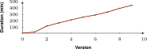
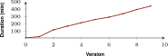
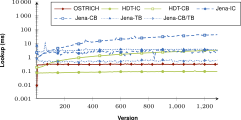

Versioning: Variants of datasets exist
in parallel
- DBpedia 2015
- DBpedia 2016
- DBpedia 2014
- ...
How to store multiple RDF dataset versions
to enable efficient versioned queries?
Fernández et al. 2018
RDF versioning
RDF Version (i)
DBpedia 2015, DBpedia 2016, ...
Set of triples annotated with version label i
Query atoms
- Version Materialization (VM):
Which cities existed in (DBpedia) 2016?
Query a single version
- Delta Materialization (DM):
Which cities were created or
removed between 2015 and 2016?
Query differences between 2 versions
- Version Query (VQ):
In which years has Brussels existed?
Query all versions,
results are annotated with their versions
Fernández et al. 2018
Versioning storage strategies
Independent Copies (IC)
Stores every version completely.
+ Fast VM.
- Slow DM and VQ, a lot of storage space.
Change-Based (CB)
Stores differences between consecutive versions.
+ Fast DM, less storage space for small changes.
- Slow VM and VQ.
Timestamp-Based (TB)
Stores temporal validity of each triple.
+ Fast VQ, less storage space for overlapping versions.
- Slow VM and DM.
A hybrid storage approach
Combining the best parts of all approaches.
-
Independent Copy (IC) for the initial version
Initial version can be stored in an efficient immutable store, such as HDT.
-
Change-Based (CB) for all following versions
Instead of storing changes relative to previous version,
we make them relative to the snapshot.
-
Timestamp-Based (TB) storage for the CB chain
Redundancy between changes is compressed by storing each triple once.
Hybrid storage has been done before
Hybrid Independent Copy (IC) and Change-Based (CB)

Problem:
For long delta chains, version materialization becomes increasingly expensive.
We make deltas relative to the snapshot
This makes version materialization fast for any version
→ 
Problem:
Changes in deltas accumulate, which can lead to a lot of redundancy.
We combine all deltas in a
combined timestamp-based store
Compresses all redundant triples, and annotates them with versions.
t1 ∈ 1,2, t2 ∈ 3,5, t3 ∈ 1,2,4, ...
Streaming, offset-enabled querying
-
Triple pattern queries
The foundational elements of SPARQL engines.
-
Streaming
Triple-by-triple processing of results is more memory efficient.
-
Offsets
Reduces processing time if only a subset is needed. (e.g. pagination)
-
Algorithms for each query atom (VM, DM, VQ)
Algorithms are explained in the paper.
Implementation: OSTRICH
- Offset-enabled STore for TRIple CHangesets
- Implemented in C/C++
- Open-source: https://github.com/rdfostrich/
- Uses HDT for snapshots, and Kyoto Cabinet (B+Tree) for deltas
Fernández et al. 2018
Evaluation using BEAR
- BEnchmark for rdf ARchives
- Based on three real-world datasets from different domains
- Triple pattern queries for the different query atoms
- Baseline implementations of different storage strategies using HDT and Jena
Experiments
We highlight some results, more results can be found in the paper.
Storage size and time scale linearly
for a few large versions
BEAR-A: 10 versions, 30M~66M triples per version.
 

Storage size and time mostly scale linearly for a many small versions
BEAR-B-hourly: 1299 versions, ~48K triples per version.

→ Delta chain becomes too long after version 1100
Version Materialization times are constant with respect to version

Median BEAR-B-hourly VM query results for all triple patterns for all versions.
Delta Materialization times are constant with respect to version

Median BEAR-B-hourly DM query results for all triple patterns for all versions.
Version Queries are always fast

Median BEAR-B-hourly VQ query results for all triple patterns.